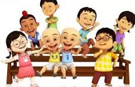

Upin & Ipin adalah sebuah serial animasi asal Malaysia yang sangat populer di kalangan anak-anak dan keluarga di seluruh Asia Tenggara. Serial ini pertama kali tayang pada tahun 2007 dan diproduksi oleh Les' Copaque Production. Ceritanya berpusat pada kehidupan dua anak kembar bernama Upin dan Ipin yang tinggal di sebuah kampung bersama Kak Ros, kakak perempuan mereka, dan Opah, nenek mereka. Setiap episode mengajarkan nilai-nilai moral, budaya, dan persahabatan dengan gaya yang lucu dan penuh petualangan. Dengan visual yang menarik serta cerita yang sederhana namun mendalam, Upin & Ipin berhasil memikat hati banyak penonton dari berbagai usia.
